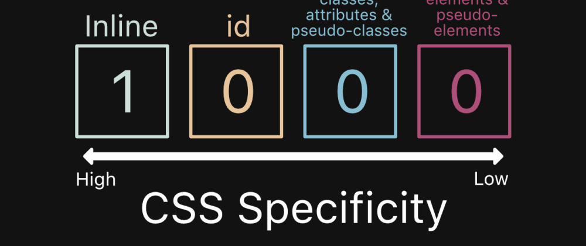

| Selector Name Category Name | Defination It provides a top level bride eye view defination | Syntax Sample code to use. |
|---|---|---|
| Style Attribute | If an element has inline styling. It automatically overrides all the other styles. | <button style="color=black;"> |
| ID | ID has more unique value and they are widely used to focus on an element. | <button id="id-1"> |
| Class, pseudo-class element | Classes are represent with a dot and it can be used multiple times to style an element. |
.cat { ... } |
| Elements | User can directly select an element to style. However, it creates problem when we use same elements multiple times. |
img { ... } |
| Selector Name | ||
|---|---|---|
|  | ||